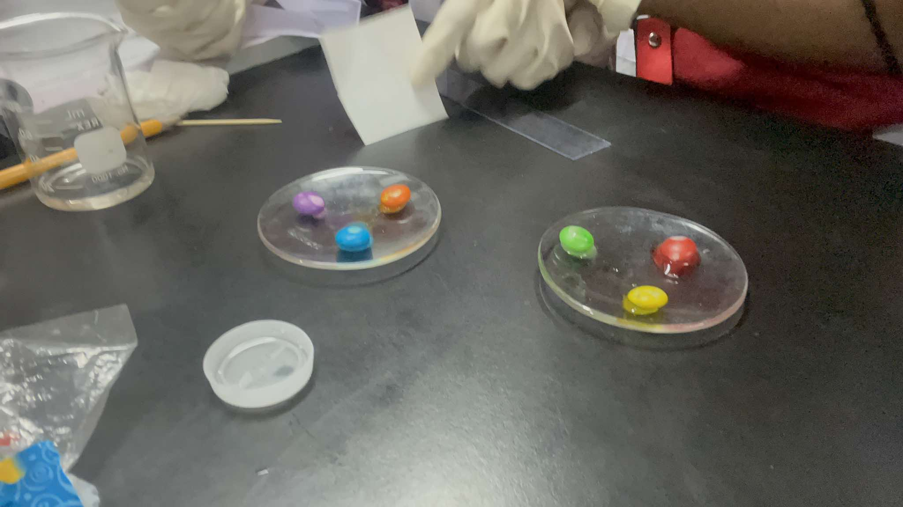
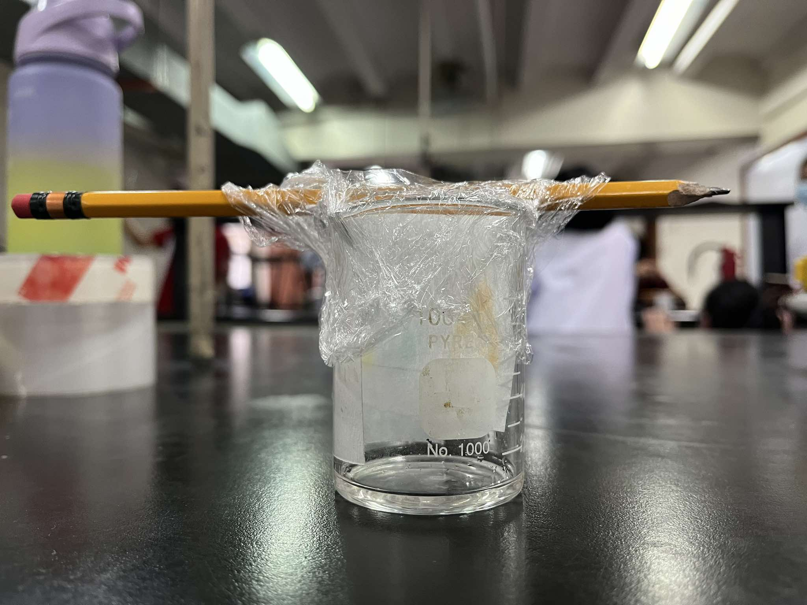
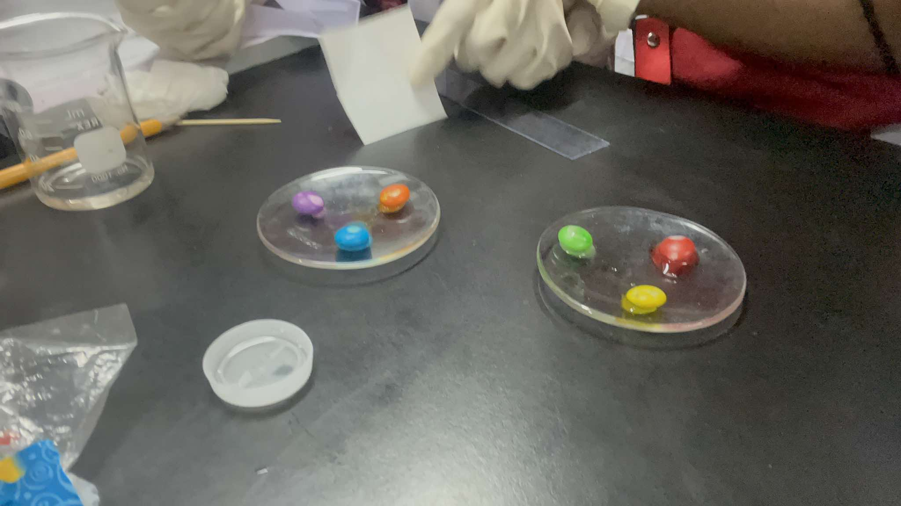
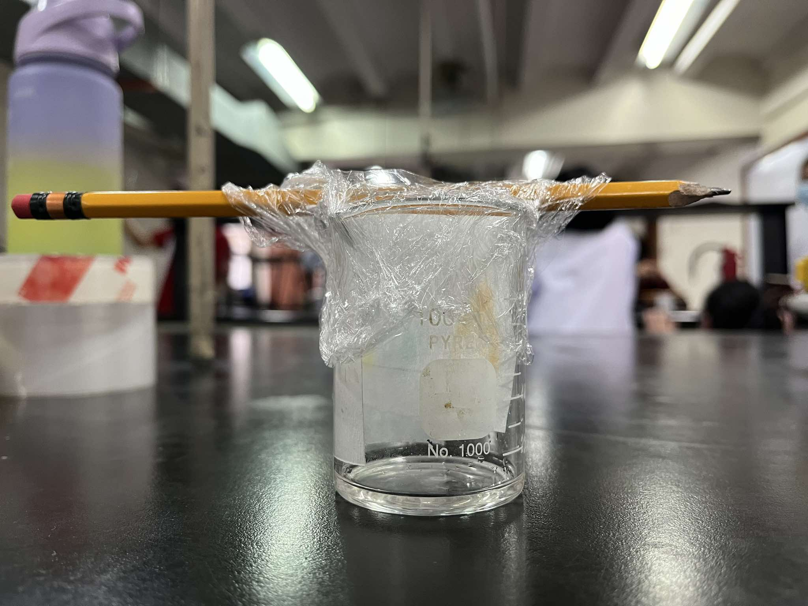

General Chemistry 1
Quarter 1 Performance Task 1
Introduction
Paper chromatography was discovered by Synge and Martin in 1943. It is a process used to separate components of a mixture with soluble substances. It is used to separate, identify, and analyze substances within a mixture. Therefore, this experiment was conducted to determine the pigments present in the candy coating. The group used several materials to separate the color pigments using paper chromatography.
Documentation of Preparation and materials
Experiment Results
As we dropped water droplets on the colored candies, the colored coating started mixing with the water.
Documentation of Results
 



Data Analysis
In the experiment, we gathered the colored-coated candies in a watch glass and then placed them in water. This allowed the dye to dissolve and create a colored solution. We then placed droplets of the colored solution on the filter paper, allowing them to spread. This process enabled us to observe how the different colors separated and became more vibrant as they traveled across the paper. Then, we hung the filter paper on a pencil to let it dry, which helped us better observe the separated colors. This experiment demonstrated the principles of chromatography and filtration.
Discussion
Chromatography is used to separate mixtures of substances into their components. All forms of chromatography work on the same principle. They all have a stationary phase, a solid or a liquid supported on a solid, and a mobile phase, a liquid or a gas. The mobile phase flows through the stationary phase and carries the components of the mixture with it. Different components travel at different rates. In paper chromatography, the stationary phase is a very uniform absorbent paper. The mobile phase is a suitable liquid solvent or mixture of solvents. For this experiment, we used the color coating of the candy as the source of pigments for the mobile phase.
Conclusion
In summary, chromatography paper serves as an essential tool used in chemistry for separating and analyzing mixtures of substances. By exploring this technique, students gain a deeper understanding of the principles of chemistry and develop essential skills that can be applied in scientific and real-world contexts. As a versatile and accessible method, chromatography plays a crucial role in academic research and practical applications across various industries.
Applications and Real-Life Connections
There are numerous ways paper chromatography can be utilized in our everyday lives. Some common applications include monitoring ripening and fermentation processes, verifying the purity of pharmaceuticals, analyzing cosmetic products, detecting contaminants in food and beverages, and identifying illegal substances in forensic investigations. It is also used to inspect reaction mixtures in biochemistry labs and to detect narcotics and marijuana in both humans and animals.